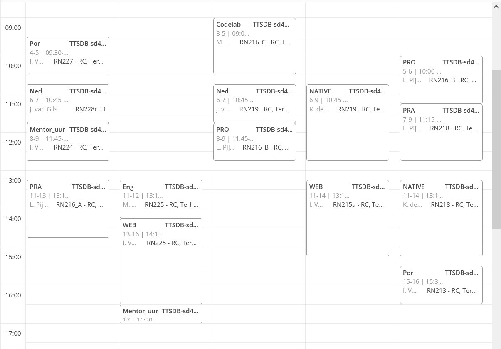

Welkom op de Curio info site voor de opendag
Hier kan je informatie vinden over je rooster in het eerste jaar en een voorbeeld ervan

Hier links kan je een voorbeeld vinden van een rooster zoals je die zult zien in je overzicht. Aan de linkerkant zie je de tijden en bovenaan zou je de dagen moeten kunnen zien. Ieder vak dat er staat is duidelijk aangeven met een afkorting of de naam van het vak. Als je op een vak klikt krijg je meer informatie over de les te zien, zoals bijvoorbeeld het lokaal, de docent en de tijd.